SK海力士在Hot Chips 2026演讲聚焦高带宽内存（HBM）和先进封装：3D堆叠、键合、系统集成选择。ServeTheHome现场报道全文。
核心立场：HBM封装正拧紧成co-design问题：键合、热、中介层应力相互作用。从HBM2E的460GB/s到HBM4的2048GB/s，热管理正成为20+ die堆叠的绑定约束，混合键合被视为通往更高堆叠的路径。
SK海力士Hot Chips 2026演讲围绕HBM和先进封装。从slide翻页看，涵盖3D堆叠、键合、以及HBM背后的系统集成选择。现场报道。
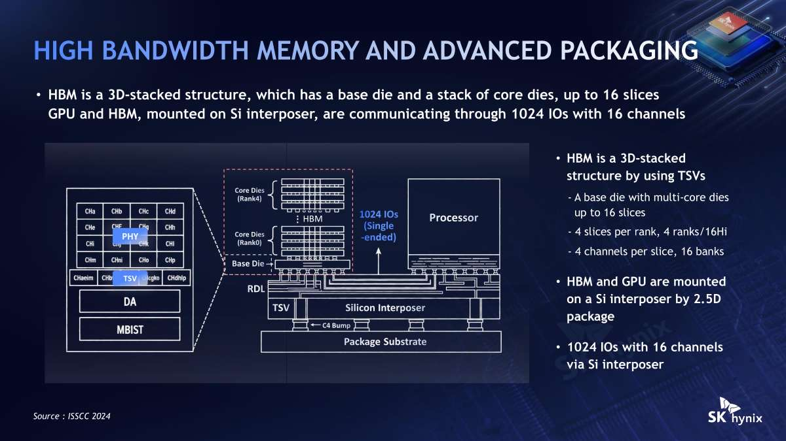
SK海力士开场解释：HBM是3D堆叠结构，由base die和核心die堆叠构成，共最多16片。GPU和HBM一起坐在硅中介层上的2.5D封装里，经1024个IO、16通道通信：每rank四片、16高堆叠里四个rank。把中介层连接做对很关键，因为那是HBM与加速器的交汇点。
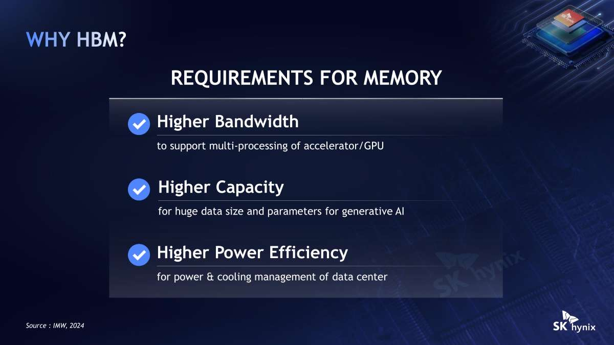
更高带宽、更高容量、更高能效是推进HBM的初衷。
尽管HBM每GB成本更高，SK海力士主张更广泛的HBM采用节省空间、功耗和运营成本。一个有趣对比：显示12个GDDR6点vs 4个HBM3E点：更省空间同时提供更多带宽和容量。（ServeTheHome觉得这对比点略奇，因为消费级RTX 5090有32GB GDDR7。）
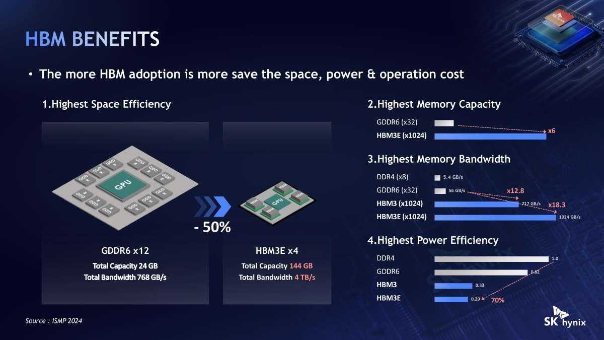
容量和带宽随每一代HBM攀升：HBM2E 460GB/s、HBM3 717GB/s、HBM3E 1024GB/s、HBM4翻倍到2048GB/s（2048 IO）。封装尺寸也从10×11mm base长到HBM4的12.4×11mm。
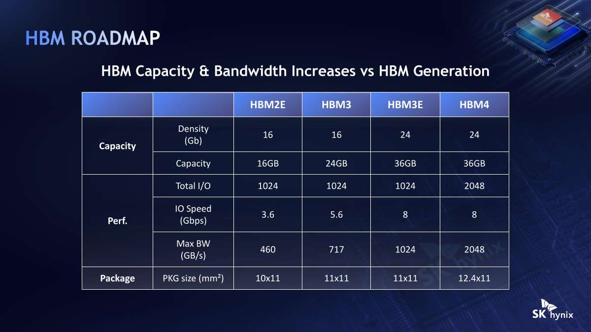
HBM4有更多TSV和micro-bumps。SK海力士列出超20K TSV和16148个base micro-bumps（12.8×11mm part、775um Z-height），目标超2TB/s带宽、40%+ 能效提升和改善的热阻。容量升至48GB，12-high量产、16-high认证中。
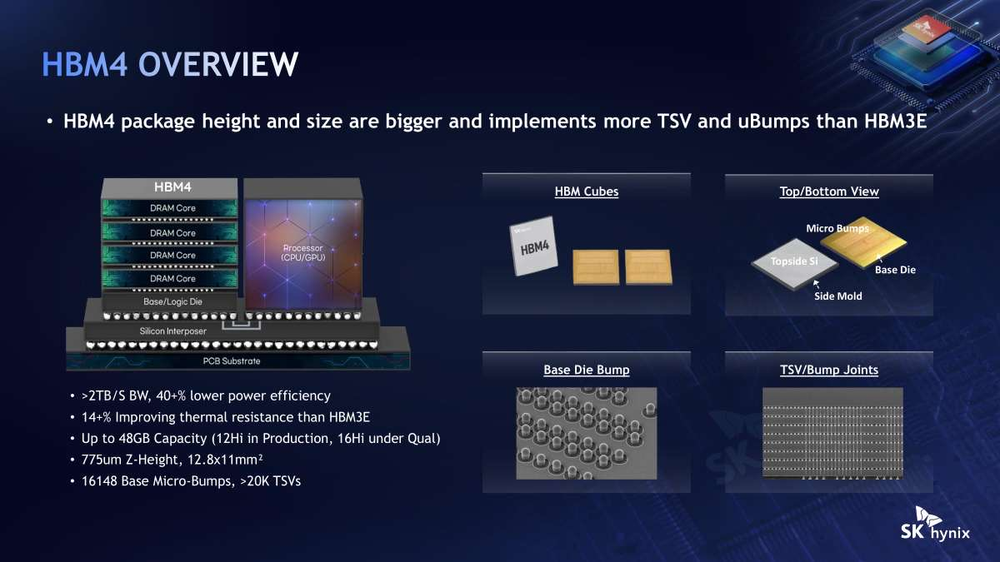
die-to-die堆叠有两种主要键合选择，SK海力士摆出热压键合+非导电膜（TC+NCF）vs质量回流+模压底部填充（MR+MUF）的权衡。TC+NCF高生产率、低热阻但易受芯片翘曲影响；MR+MUF更好处理薄die翘曲，但热阻更高、gap-fill窗口更窄。选择影响下游良率和热行为。
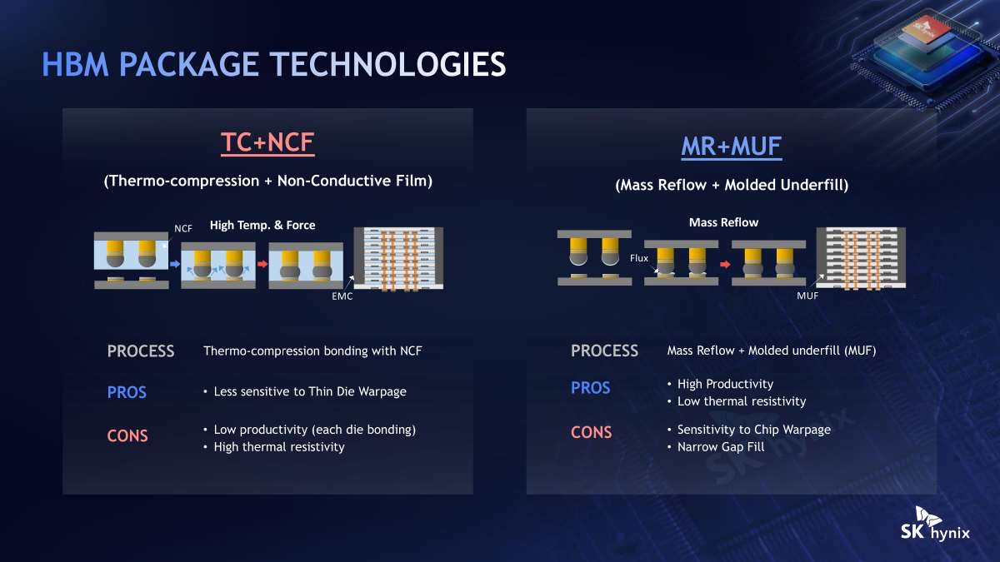
SK海力士在HBM组装前后运行完整晶圆级流程：从硅刻蚀和TSV铜填充、经BEOL金属化、晶圆减薄、背面加工、单片化和测试。known-good stacked die（KGSD）晶圆步骤让SK海力士在每个cube进入系统级封装前测试，防止坏件消耗昂贵的中介层面积。
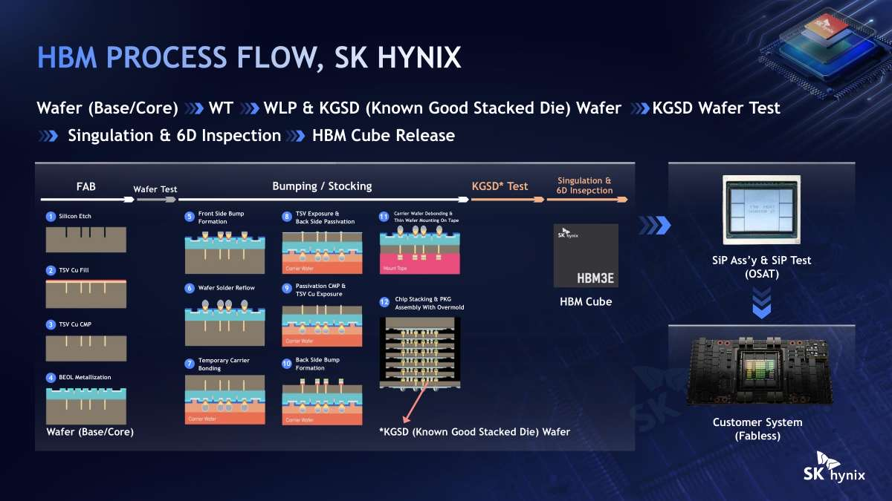
TSV形成、micro-bumping、晶圆减薄和芯片堆叠承担HBM封装的大多数挑战。SK海力士把工艺均匀性、良率和铜污染标为TSV/bump侧的担忧，然后指向减薄和带底部填充的堆叠组装里的薄die处理和翘曲控制。
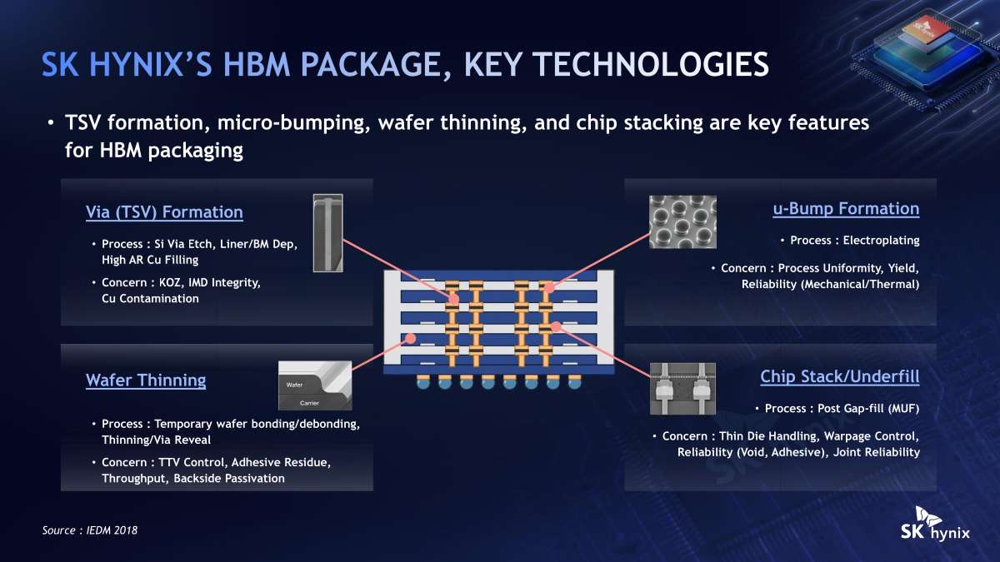
HBM3E 16-high（每cube 48GB）标记封装里程碑：在早期12-high堆叠上再加两die，迫使封装保持在相同Z-height预算内。SK海力士不得不把芯片厚度、间隙高度和bump pitch大致减半以适应更高堆叠，同时保持gap-fill质量完好。
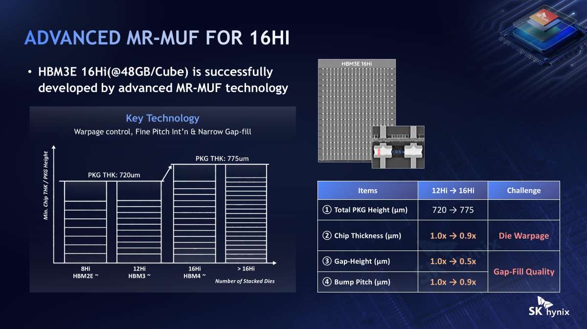
堆叠高度升到20+ die时，热管理成为绑定约束。该图对比键合和材料堆叠选项的相对热阻：从普通模压底部填充经过先进MR-MUF到混合键合，每步降低热阻、支持更多层。
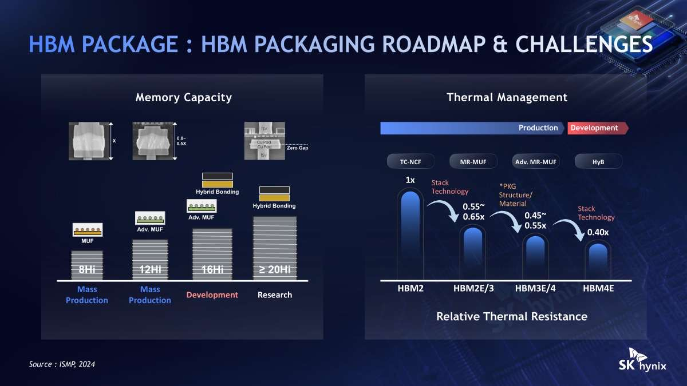
混合键合改变堆叠组装方式。室温下pick-and-place，超200°C退火形成SiO2-to-SiO2和Cu-to-Cu键合：这正是让堆叠摆脱旧方案的bumps和gap-fill的机制。
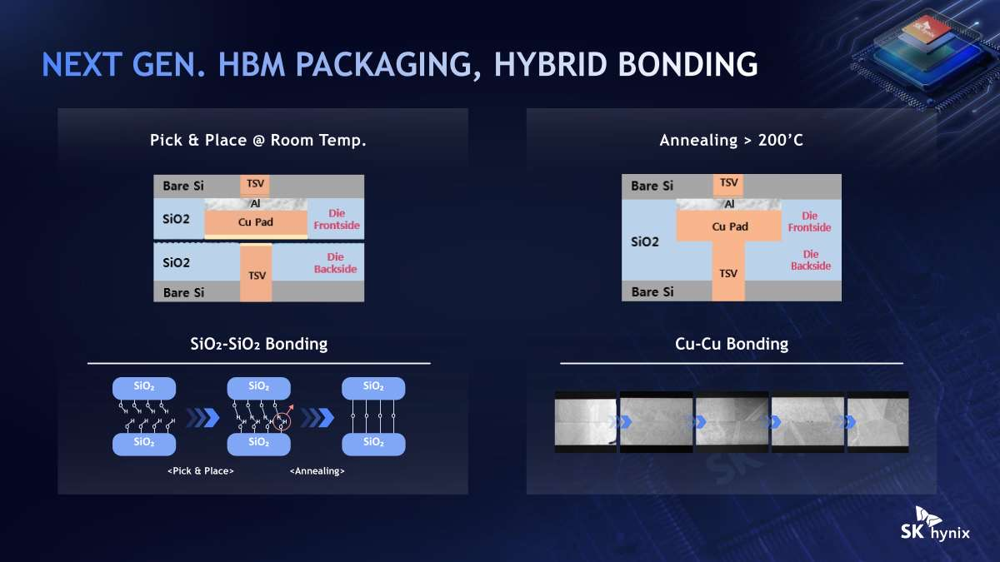
SK海力士把混合键合定位为通往20+ high堆叠、更窄bump pitch带来的更宽性能、以及更高电导更好热效率的路径。固定Z-height下，混合键合让die用更厚的core，并把bump pitch推到18um以下：MR-MUF做不到。
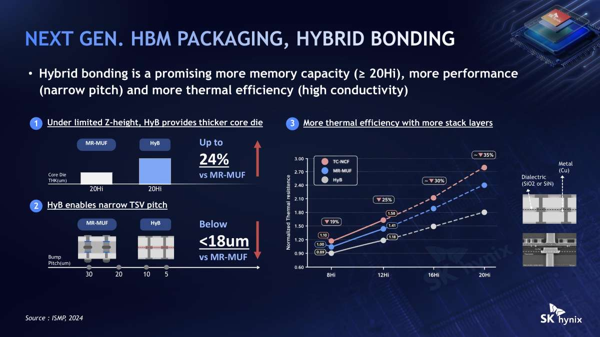
SK海力士对比自身方案与竞品冷却。它的i-HBM在热的die-to-die PHY区内嵌高导热电绝缘冷却组件、创造专用热路径，目标热阻降超30%。三星HPB用铜均热板把DRAM移到处理器旁，美光精进base-die电路设计提升效率。
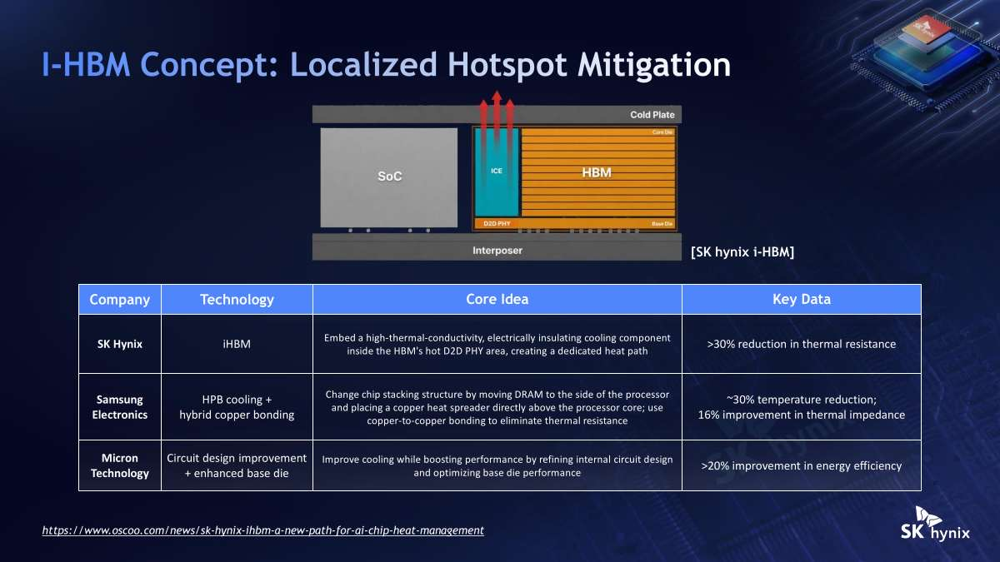
往HBM4之后看，SK海力士把剩余工作框为两杠杆。一杠通过扩展数据IO和提升每IO速度加带宽，另一杠用逻辑base die和更多TSV提升能效。两杠杆都在接下来几张图出现。
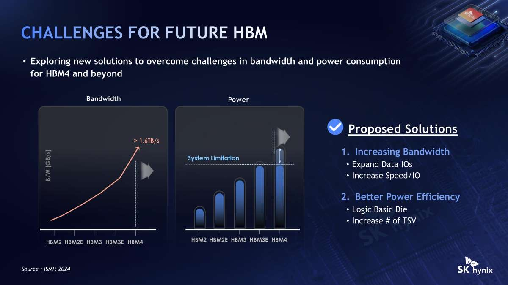
带宽增长来自推进更多数据IO和更快IO率，逻辑工艺集成也在画面中。SK海力士显示每单元带宽从HBM2E的0.5TB/s爬到HBM4的2.0TB/s，HBM3E到HBM4步进IO速度翻倍、数据IO数超过1K。
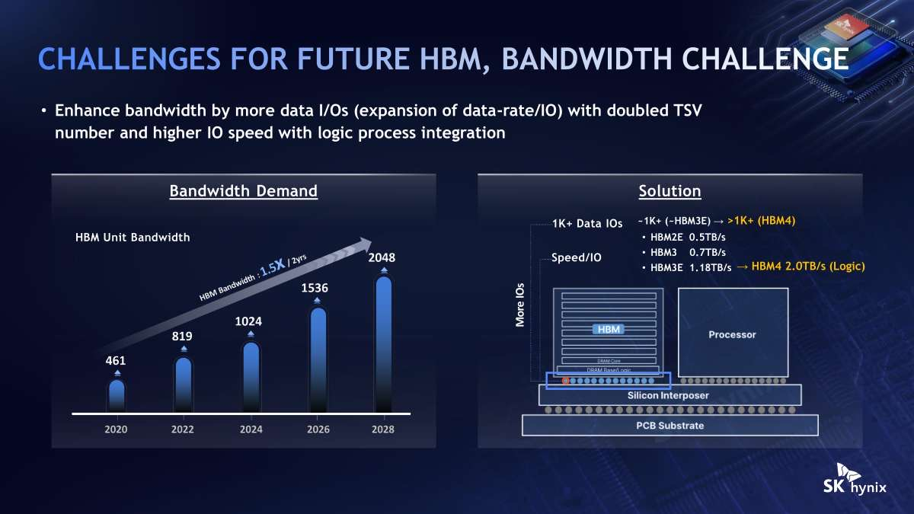
能效侧，SK海力士靠优化的逻辑代工工艺和分布整个part的电源TSV改善电源供电网络（PDN）。跨近期HBM世代突出75% 的PDN提升，低功耗逻辑方法持续缩放。
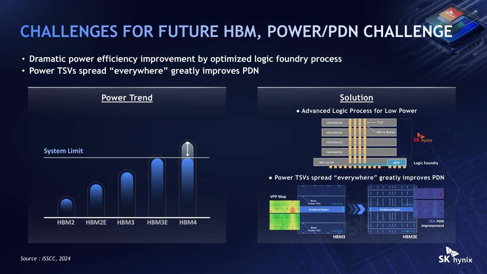
SK海力士转向系统级影响：内存过去在系统集成流程里最后才组装。AI先进封装里，HBM现在最先组装：在包的其余部分建好前，cube和中介层承受强得多的可靠性压力。（那张照片是很老的主板，好玩。）
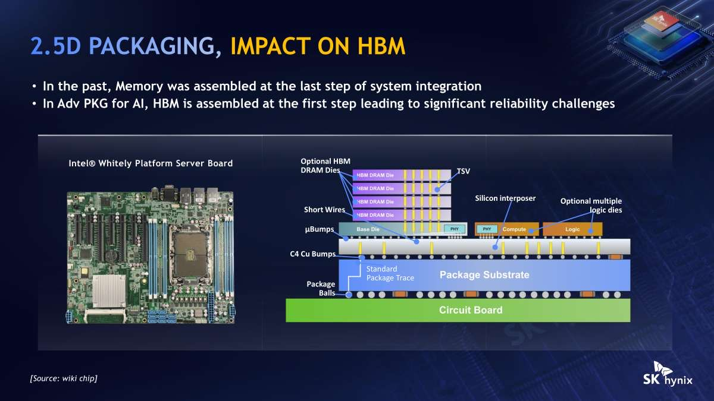
SK海力士对比主要先进封装方案：CoWoS-S、CoWoS-L、EMIB，以及各自把应力放在哪里。封装选择改变HBM堆叠必须吸收多少机械和热应力。
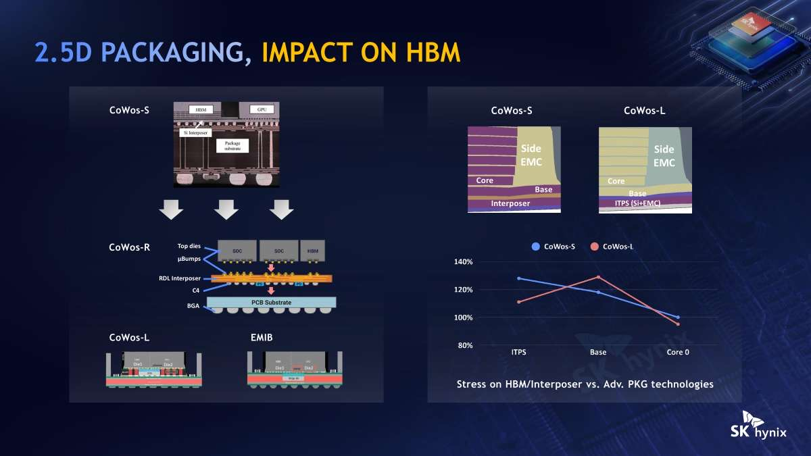
最后有三档封装方向：die-on-die、中介层上的die-to-die、板上的package-to-package。把HBM放进该层级，解释了它为何落在最严苛那档、以及SK海力士为何在堆叠和键合上这么用力。
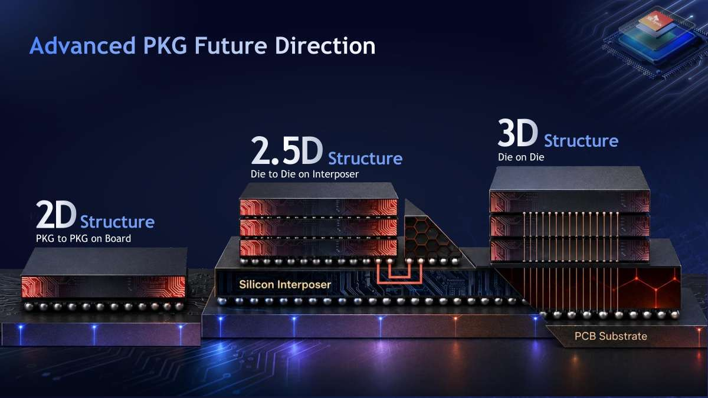
感觉相比Hot Chips其他HBM演讲，SK海力士这里非常聚焦封装。
ServeTheHome看法：SK海力士演讲讲清：HBM封装正拧紧成co-design问题：键合、热、中介层应力都相互作用。作者希望公司多讲些定制HBM方案或HBM5，但这就是所给的。希望很快有更多信息。
参考：https://www.servethehome.com/sk-hynix-hbm-packaging-at-hot-chips-2026/